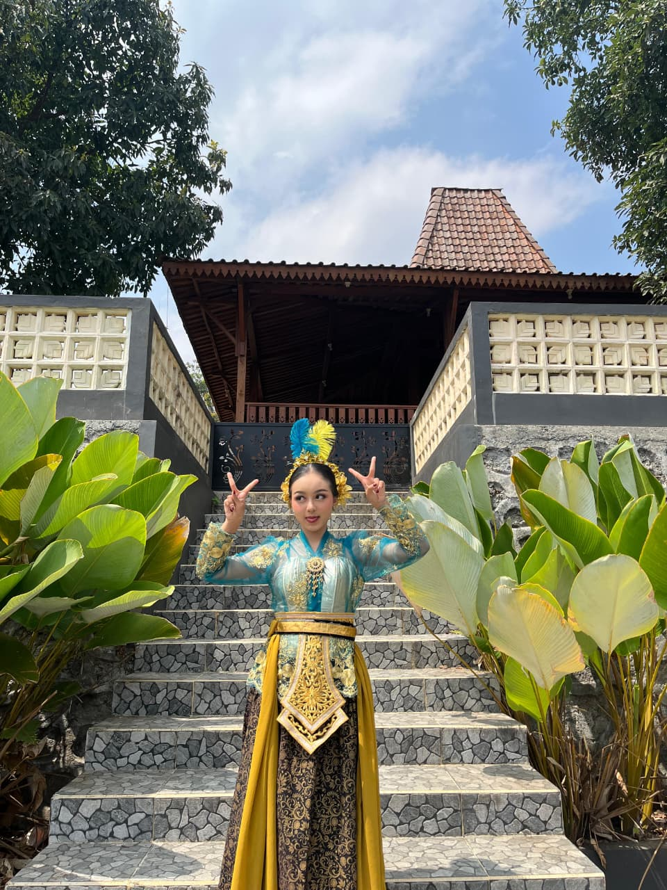
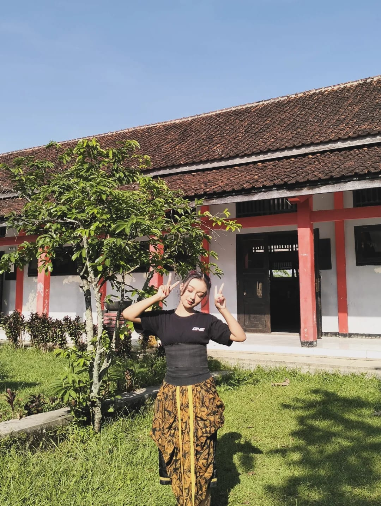
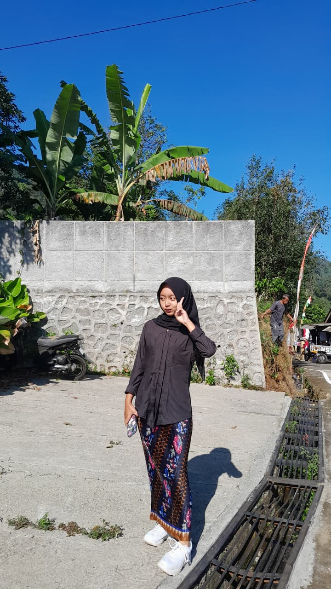
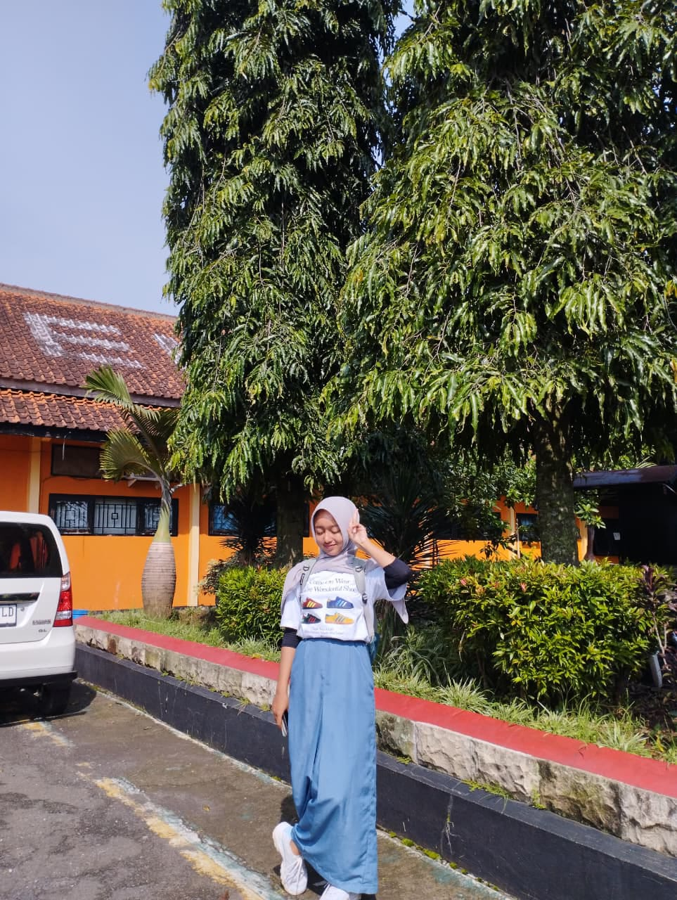
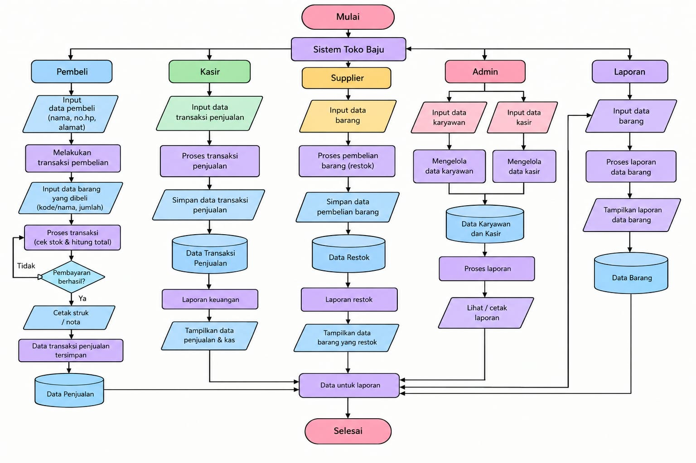
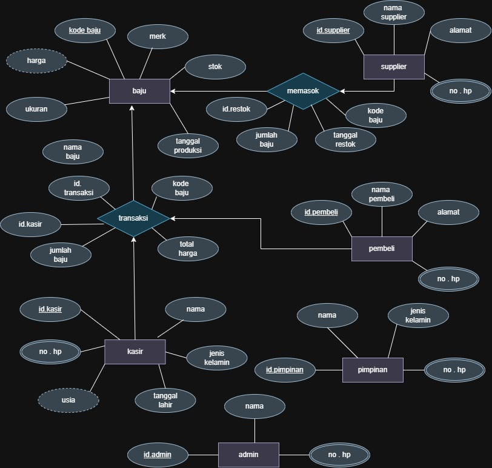
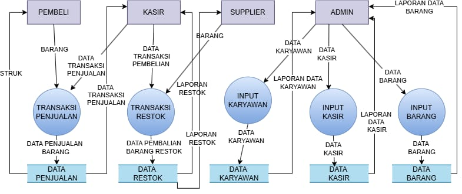
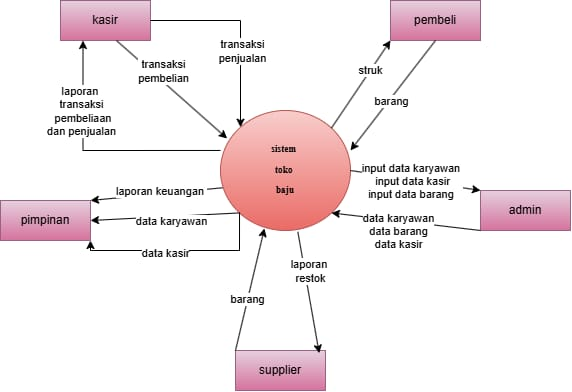

HALO, PERKENALKAN
Saya adalah seorang siswi SMK yang memiliki semangat untuk belajar, berkembang, dan meraih cita-cita menjadi guru.
Lihat Profil SayaPROFIL
TENTANG SAYA
Nama saya Alisa Aulia Fahrika dan saya biasa dipanggil Lisa. Saya adalah siswi SMK N 3 Kendal. Saya merupakan pribadi yang mudah beradaptasi dan senang mengenal orang-orang baru.
Saya juga senang bekerja sama dengan orang lain dan berusaha menjadi seseorang yang sabar dalam menghadapi berbagai situasi. Saya memiliki hobi membaca dan terus berusaha mengembangkan kemampuan diri untuk mencapai cita-cita saya menjadi seorang guru.
DOKUMENTASI




PERJALANAN
Pendidikan Taman Kanak-kanak.
Pendidikan Sekolah Dasar.
Pendidikan Sekolah Menengah Pertama.
Sedang menempuh pendidikan Sekolah Menengah Kejuruan.
PENGALAMAN
Saya pernah mengikuti organisasi Pramuka ketika masih bersekolah di SMP. Sampai sekarang saya masih aktif dalam kegiatan Pramuka walaupun sudah lulus dari SMP.
Pramuka AktifKEMAMPUAN PERSONAL
Mudah berkenalan dan membangun hubungan baik dengan orang lain.
Dapat bekerja sama dengan anggota tim dengan baik untuk mencapai tujuan bersama.
Berusaha tetap tenang dan sabar ketika menghadapi berbagai keadaan.
PENCAPAIAN
Pernah meraih juara dalam lomba 17 Agustus, yaitu mendapatkan juara 1 dan juara 2 pada umur 9 tahun samapai 12 tahun.
SKILL
KARYA SAYA



